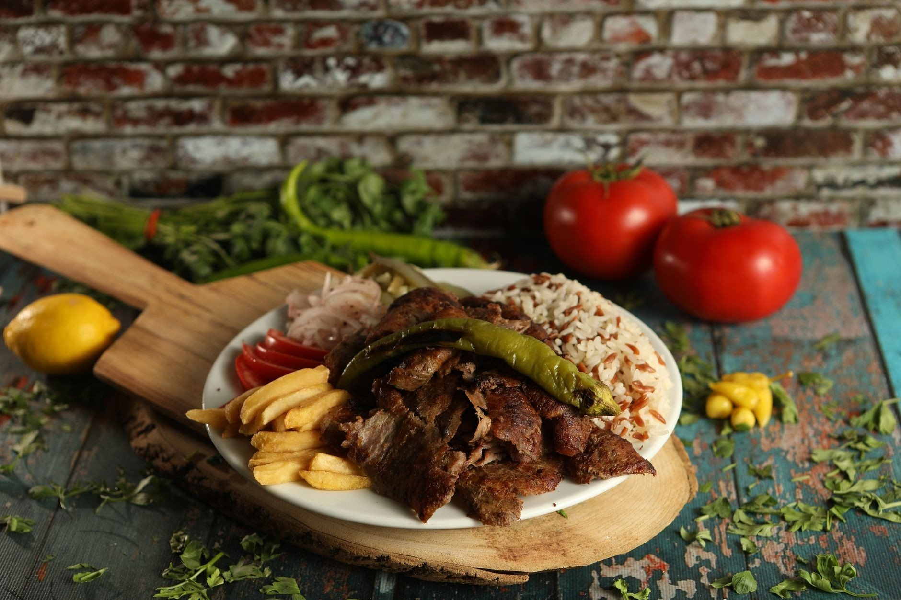

Kebab, jak wszędzie? Nie do końca. U nas mięso zawijamy w cienki lawasz, a obok czekają dania, których w zwykłym kebabie nie znajdziesz: tolma, chinkali czy zupa szpinakowa.
Wpadnij na ormiański kebab albo tolmę - gotujemy na miejscu, każdego dnia od świeża.